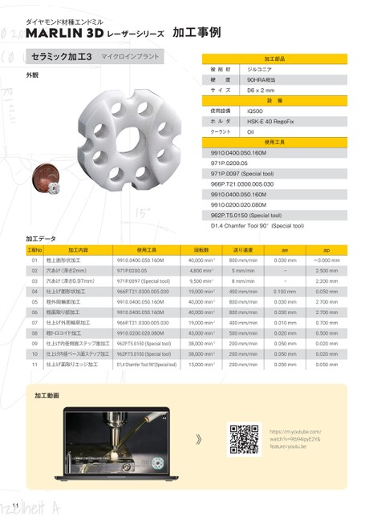

p.11加工事例 セラミック加工4

ダイヤモンド材種エンドミル
MARLIN3DレーザーシリーズMARLIN3Dレーザーシリーズ 加工事例 加工事例
セラミック加工3マイクロインプラント
加工部品
外観 外観 被削材 ジルコニア 被削材 ジルコニア
硬度 90HRA相当
サイズ D6x2mm
設備
使用設備 iQ500
ホルダ HSK-E40RegoFix
クーラント Oil
使用工具
9910.0400.050.160M
971P.0200.05
971P.0097(Specialtool)
966P.T21.0300.005.030
9910.0400.050.160M
9910.0200.020.080M
962P.T5.0150(Specialtool)
D1,4ChamferTool90°(Specialtool)
加工データ
工程No 加工内容 工程No 使用工具加工内容 回転数 使用工具送り速度 回転数 ae 送り速度 ap
01 粗上面形状加工 9910.0400.050.160M 01 粗上面形状加工 40,000min-19910.0400.050.160M800mm/min 0.030mm40,000min-1 〜3.000mm800mm/min 0.030mm
02 穴あけ(深さ2mm) 971P.0200.05穴あけ(深さ2mm) 02 4,800min-1971P.0200.055mm/min 4,800min-1 ー 2.500mm5mm/min
03 穴あけ(深さ0.97mm) 971P.0097(Specialtool)穴あけ(深さ0.97mm) 03 9,500min-1971P.0097(Specialtool) 8mm/min 9,500min-1 ー 2.200mm8mm/min
04 仕上げ面形状加工 966P.T21.0300.005.030仕上げ面形状加工 04 19,000min-1966P.T21.0300.005.030400mm/min 0.100mm19,000min-1 0.050mm 0.100mm
05 粗外周輪郭加工 9910.0400.050.160M粗外周輪郭加工 05 40,000min-19910.0400.050.160M800mm/min 0.030mm40,000min-1 2.700mm 0.030mm
06 粗面取り部加工 9910.0400.050.160M 06 粗面取り部加工 40,000min-19910.0400.050.160M800mm/min 0.030mm40,000min-1 2.700mm 0.030mm
07 仕上げ外周輪郭加工 966P.T21.0300.005.030仕上げ外周輪郭加工 07 19,000min-1966P.T21.0300.005.030400mm/min 0.010mm19,000min-1 0.700mm 0.010mm
08 粗トロコイド加工 9910.0200.020.080M粗トロコイド加工 08 43,000min-19910.0200.020.080M500mm/min 0.020mm43,000min-1 0.500mm 0.020mm
09 仕上げ内径側面ステップ面加工 962P.T5.0150(Specialtool)仕上げ内径側面ステップ面加工38,000min-1962P.T5.0150(Specialtool) 09 200mm/min 0.050mm38,000min-1 0.020mm 0.050mm
10 仕上げ内径ベース面ステップ加工 962P.T5.0150(Specialtool)仕上げ内径ベース面ステップ加工38,000min-1962P.T5.0150(Specialtool) 10 200mm/min 0.050mm38,000min-1 0.020mm 0.050mm
11 仕上げ面取りエッジ加工 D1,4ChamferTool90°(Specialtool) 11 仕上げ面取りエッジ加工15,000min-1D1,4ChamferTool90°(Specialtool) 200mm/min 0.050mm15,000min-1 0.050mm 0.050mm
加工動画
https://m.youtube.com/
watch?v=9tb94ipyE2Y&
feature=youtu.be
11